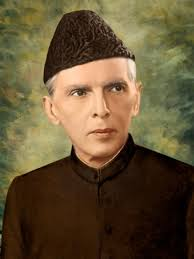

Quaid-e-Azam
1876 - 1948
Founder of Pakistan
Muhammad Ali Jinnah 25 December 1876 – 11 September 1948 was a prominent lawyer, politician, and the founder of Pakistan, who served as the first Governor-General of the country from 1947 until his death in 1948. He was born in Karachi and studied law in London, later establishing a successful legal career in Bombay. Over the following decades, he became a central figure in the Indian independence movement, initially advocating for Hindu-Muslim unity before leading the All-India Muslim League. He played a decisive political and strategic role in the creation of Pakistan through his leadership and vision, earning him the title “Quaid-e-Azam” (Great Leader). His efforts were instrumental in securing a separate nation for Muslims of the subcontinent in 1947.
Early Life and Education
Muhammad Ali Jinnah was born on 25 December 1876 in Karachi, which was then part of British India. From an early age, he displayed intelligence, discipline, and determination. He later traveled to London to study law at Lincoln's Inn, where he developed a strong understanding of legal principles and democratic values. His education abroad played a significant role in shaping his future political vision and leadership style.
Leadership and Vision
Known for his unwavering determination and exceptional leadership skills, Muhammad Ali Jinnah inspired millions through his vision of a democratic and progressive nation. He emphasized unity, faith, and discipline as the guiding principles for the people of Pakistan. His commitment to justice, equality, and constitutional governance continues to serve as a source of inspiration for leaders and citizens alike.
Legacy
Muhammad Ali Jinnah's legacy remains deeply embedded in Pakistan's national identity. His vision for a democratic, inclusive, and progressive state continues to guide the country's constitutional and political development. Numerous institutions, roads, airports, universities, and public monuments across Pakistan are named in his honor, reflecting the nation's respect and gratitude for his leadership and sacrifices.
Political Career
Muhammad Ali Jinnah began his political career as a member of the Indian National Congress, where he advocated for constitutional reforms and greater representation for Indians under British rule. Over time, he became one of the most influential leaders of the All-India Muslim League. Through his political expertise, negotiation skills, and commitment to protecting the rights of Muslims in the subcontinent, Jinnah emerged as the leading voice for the demand for a separate homeland, ultimately paving the way for the creation of Pakistan.
Role in the Pakistan Movement
Jinnah played a pivotal role in the Pakistan Movement, transforming the Muslim League into a powerful political force. He successfully united Muslims from different regions, cultures, and linguistic backgrounds under a common goal. Through important political negotiations, speeches, and strategic leadership, he championed the Two-Nation Theory and worked tirelessly to achieve the establishment of Pakistan on 14 August 1947. His efforts earned him widespread respect and recognition as the architect of the nation.
Personal Qualities and Character
Muhammad Ali Jinnah was widely admired for his integrity, honesty, and strong sense of discipline. He was known for his professionalism, sharp intellect, and dedication to public service. Despite facing numerous political challenges, he remained steadfast in his principles and commitment to his objectives. His famous motto, "Faith, Unity, and Discipline," continues to inspire generations of Pakistanis and reflects the values he believed were essential for national progress and prosperity.
Major Achievements
Muhammad Ali Jinnah achieved several historic milestones throughout his political career. He successfully represented Muslim interests in British India and played a leading role in constitutional negotiations with both British authorities and Indian political leaders. His most significant achievement was the establishment of Pakistan as an independent state in 1947. Through his determination, diplomatic skills, and political leadership, he transformed the dream of a separate homeland into a reality, securing his place among the most influential leaders of the twentieth century.
Challenges and Struggles
The journey toward the creation of Pakistan was filled with numerous challenges and obstacles. Muhammad Ali Jinnah faced strong opposition from political rivals, complex negotiations with the British government, and the difficulties of uniting diverse Muslim communities across the subcontinent. Despite health issues and intense political pressure, he remained committed to his goal and continued to work tirelessly for the rights and representation of Muslims. His perseverance and resilience were key factors in the success of the Pakistan Movement.
National Recognition and Honors
Muhammad Ali Jinnah is remembered as the Father of the Nation in Pakistan and is honored for his remarkable contributions to the country's independence. His birthday, celebrated on 25 December, is observed as a national holiday in Pakistan. Important landmarks such as Mazar-e-Quaid, where he is buried, attract visitors from across the country. Educational institutions, public buildings, roads, and airports bearing his name serve as lasting reminders of his leadership and dedication to the nation.
Biographies
- Jinnah: Creator of Pakistan by Hector Bolitho; John Murray, 1954.
- Jinnah of Pakistan by Stanley Wolpert; Oxford University Press, 1984.
- Quaid-i-Azam Jinnah: The Story of a Nation by Rafiq Zakaria; Popular Prakashan, 1999.
- The Sole Spokesman: Jinnah, the Muslim League and the Demand for Pakistan by Ayesha Jalal; Cambridge University Press, 1985.
- Jinnah: India–Partition–Independence by Jaswant Singh; Oxford University Press, 2009.
- Muhammad Ali Jinnah: A Political Study by K. K. Aziz; Oxford University Press.
- Quaid-e-Azam Mohammad Ali Jinnah: Speeches and Writings; Various Publishers.
- Jinnah: His Successes, Failures and Role in History by Ishtiaq Ahmed; Penguin Random House, 2020.